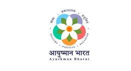
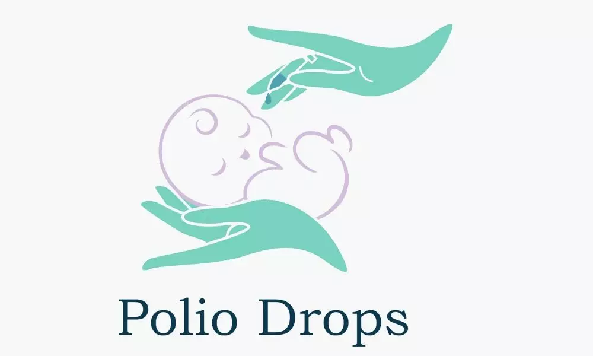
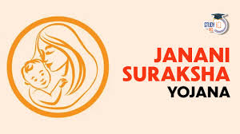
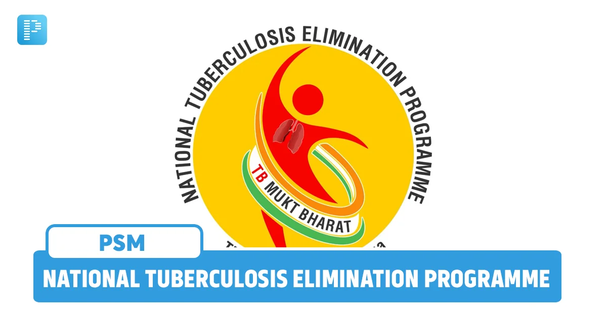
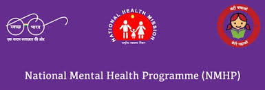

Ayushman Bharat Scheme

The Ayushman Bharat Scheme, launched by the Government of India in 2018, is a visionary step towards achieving Universal Health Coverage (UHC) for all citizens, especially the underprivileged.
It aims to address the healthcare needs of the country at both preventive and curative levels through a two-pronged approach:
1. Health and Wellness Centres (HWCs) – These centres provide free essential primary healthcare services including maternal care, child health, non-communicable diseases, and basic diagnostics.
2. Pradhan Mantri Jan Arogya Yojana (PM-JAY) – This component offers cashless health insurance coverage up to ₹5 lakh per family per year for hospitalization at secondary and tertiary healthcare levels.
This scheme is especially beneficial for low-income and vulnerable families, covering over 10 crore poor and economically disadvantaged households across India.
It enables them to access quality healthcare without financial hardship, in both public and empaneled private hospitals.
Ayushman Bharat is one of the largest government-funded healthcare schemes in the world, and it is a significant step towards making healthcare affordable, accessible, and equitable for every Indian citizen.
Polio Drops

Polio drops are oral vaccines specially designed to protect young children from poliomyelitis, commonly known as polio. Polio is a serious and highly infectious disease caused by the poliovirus, which can lead to permanent paralysis, especially in children under the age of five. In severe cases, it can even be life-threatening.
These drops are given as part of routine immunization and during special national drives like the Pulse Polio Programme. The vaccine contains a weakened version of the virus that helps the child’s immune system build strong protection without causing the actual disease.
Health workers usually administer two drops directly into the child’s mouth. The process is quick, painless, and completely safe. Polio drops are provided free of cost by the government and are an important part of public health programs across the world.
Thanks to polio drops and awareness campaigns, many countries have successfully eradicated polio. However, to keep it from coming back, it’s crucial that every child under five receives all the required doses.
By giving polio drops on time, parents are taking a powerful step in protecting their child’s future and helping build a healthier nation.
National Nutrition Mission

The National Nutrition Mission, officially known as Poshan Abhiyaan, was launched by the Government of India on 8th March 2018. It is a multi-ministerial initiative aimed at improving the nutritional outcomes for children, adolescents, pregnant women, and lactating mothers. The primary goal of this mission is to achieve a malnutrition-free India by 2030.
Poshan Abhiyaan focuses on reducing:
Stunting in children (below 5 years of age)
Under-nutrition
Low birth weight
Anemia among young children, women, and adolescent girls
This mission uses technology like the ICDS-CAS (Common Application Software) for real-time monitoring of nutrition indicators. It empowers frontline workers (Anganwadi workers and ASHAs) with smartphones to track the growth and health of children.
One of the key components of this program is community participation through campaigns such as “Poshan Maah” (Nutrition Month) and “Poshan Pakhwada”, where awareness is spread about the importance of proper nutrition, hygiene, breastfeeding, and a balanced diet.
The program is implemented in convergence with several ministries like the Ministry of Women and Child Development, Health, Education, Water and Sanitation, and Rural Development, ensuring a holistic approach to tackling malnutrition.
Through Poshan Abhiyaan, the government aims to create mass awareness, encourage behavioral changes, and promote nutritional practices that will lead to a healthier, stronger, and more productive nation.
Janani Suraksha Yojana

Janani Suraksha Yojana (JSY) is a safe motherhood intervention launched by the Government of India in April 2005 under the National Health Mission (NHM). The main aim of the scheme is to reduce maternal and neonatal mortality by promoting institutional deliveries among poor and pregnant women, especially in rural and underprivileged areas.
Under this scheme, financial assistance is provided to pregnant women who choose to deliver their babies in government or accredited private health facilities. It also provides incentives to Accredited Social Health Activists (ASHAs) who help identify pregnant women, encourage antenatal check-ups, ensure institutional delivery, and provide postnatal care.
The key objectives of JSY are:
Encourage safe and hygienic deliveries in hospitals
Reduce the risks of maternal deaths due to complications
Ensure newborns receive immediate medical attention
Provide cash support to mothers for transportation and other delivery-related needs
JSY has significantly increased the number of institutional deliveries across India and has played a major role in improving maternal and child health. The scheme is especially targeted at below poverty line (BPL) families and women from Scheduled Castes and Scheduled Tribes.
By ensuring timely medical care and financial help, Janani Suraksha Yojana empowers women, saves lives, and promotes a healthier future for both mothers and their babies.
National Tuberculosis Elimination Program

The National Tuberculosis Elimination Program (NTEP) is one of India's most ambitious public health initiatives, aimed at making the country TB-free by 2025. Replacing the earlier RNTCP, this program focuses on the early detection, accurate diagnosis, and complete treatment of tuberculosis through free and accessible services in both government and private healthcare sectors. It leverages advanced diagnostic tools like CBNAAT and TrueNat, ensures digital monitoring through the Nikshay portal, and provides nutritional support of ₹500 per month under the Nikshay Poshan Yojana to every notified TB patient. The program also tackles multidrug-resistant TB (MDR-TB) and extensively drug-resistant TB (XDR-TB) with specialized care and medications. To find hidden cases, it conducts active case finding, door-to-door screenings, and community awareness campaigns, while collaborating closely with ASHA workers, NGOs, and private practitioners to expand its reach. Over the years, NTEP has achieved significant progress in increasing TB case notifications, improving treatment success rates, and reducing TB-related deaths. However, challenges like social stigma, incomplete treatments, and rising drug resistance still need to be addressed. With strong political commitment, modern technology, public-private partnerships, and active community participation, NTEP is not just a healthcare program—it is a nationwide movement. Together, through determination and unity, India is moving steadily toward the dream of a TB-free future, where "TB Harega, Desh Jeetega" becomes not just a slogan, but a historic achievement.
National Mental Health Program

The National Mental Health Programme (NMHP), launched in 1982 by the Government of India, is a major public health initiative aimed at providing accessible, affordable, and quality mental healthcare to all, especially the vulnerable and underserved populations. It seeks to integrate mental health services with the primary healthcare system, ensuring early detection, treatment, and rehabilitation of mental illnesses at the community level. One of its core components is the District Mental Health Programme (DMHP), which provides outpatient services, counseling, and awareness at district hospitals and community centers. The program also focuses on training general physicians, nurses, and health workers in basic mental healthcare, while conducting Information, Education, and Communication (IEC) activities to reduce the stigma around mental illness. With special outreach programs in schools and colleges, and efforts to strengthen mental hospitals and psychiatric units, NMHP addresses mental health holistically. Recent initiatives like Tele-MANAS, a 24/7 mental health helpline launched in 2022, use digital technology to expand access to mental health support across India. Despite challenges like limited infrastructure and social stigma, the NMHP continues to play a crucial role in promoting mental well-being and building a society where mental health is treated with the same importance as physical health.